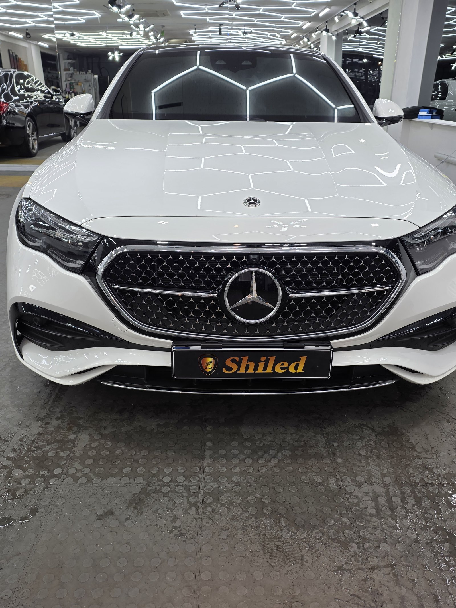
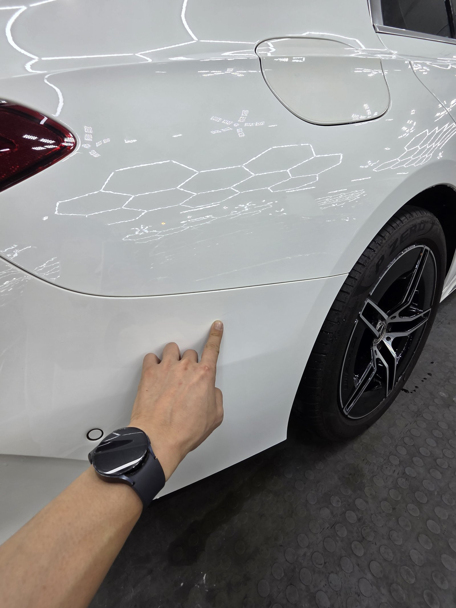
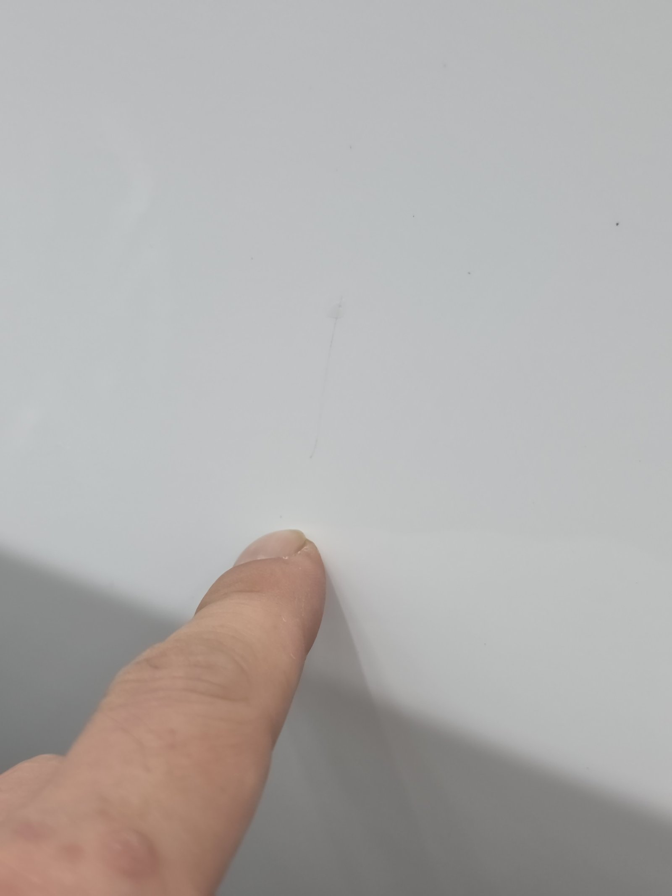
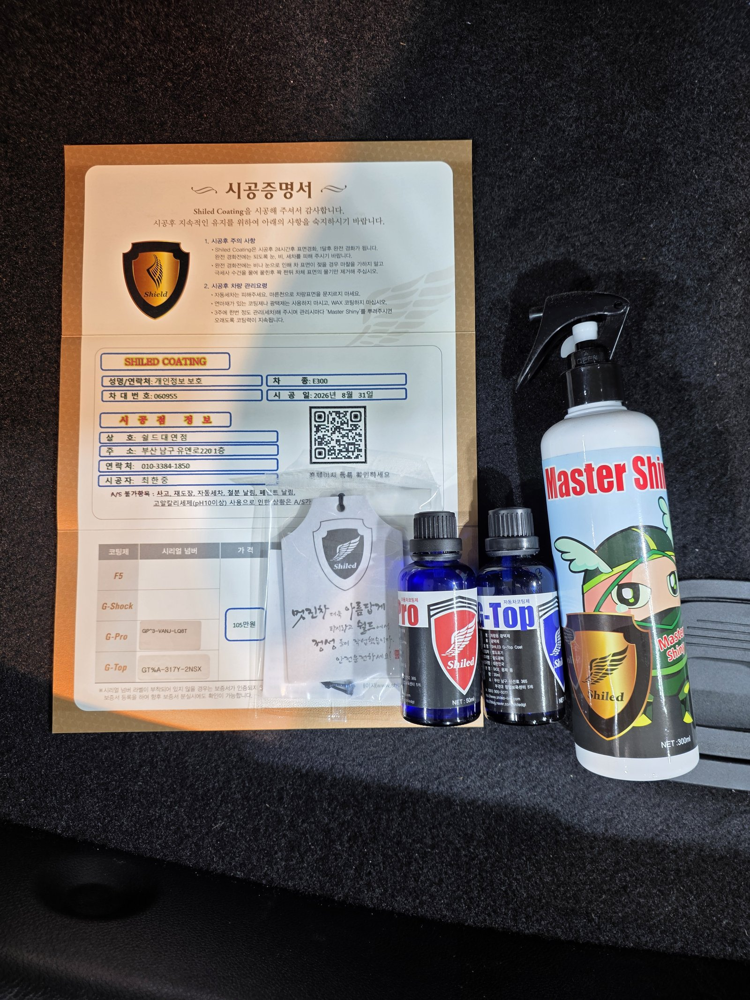
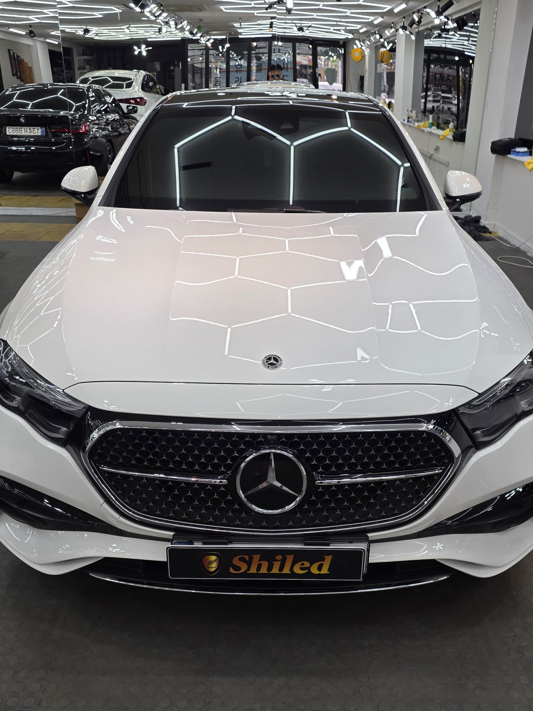
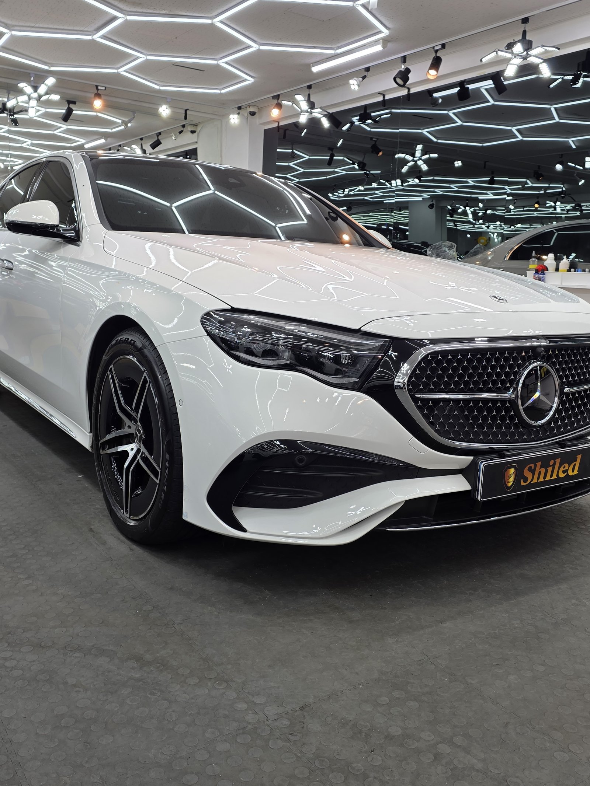
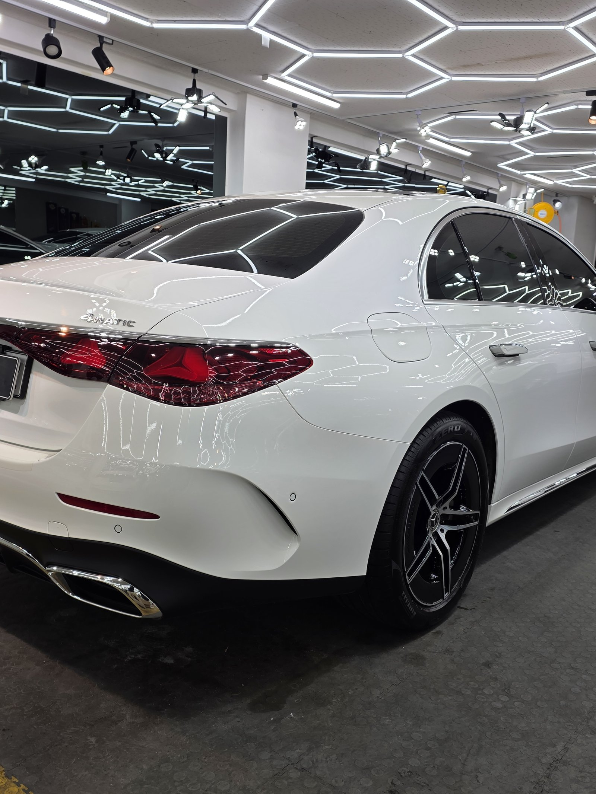
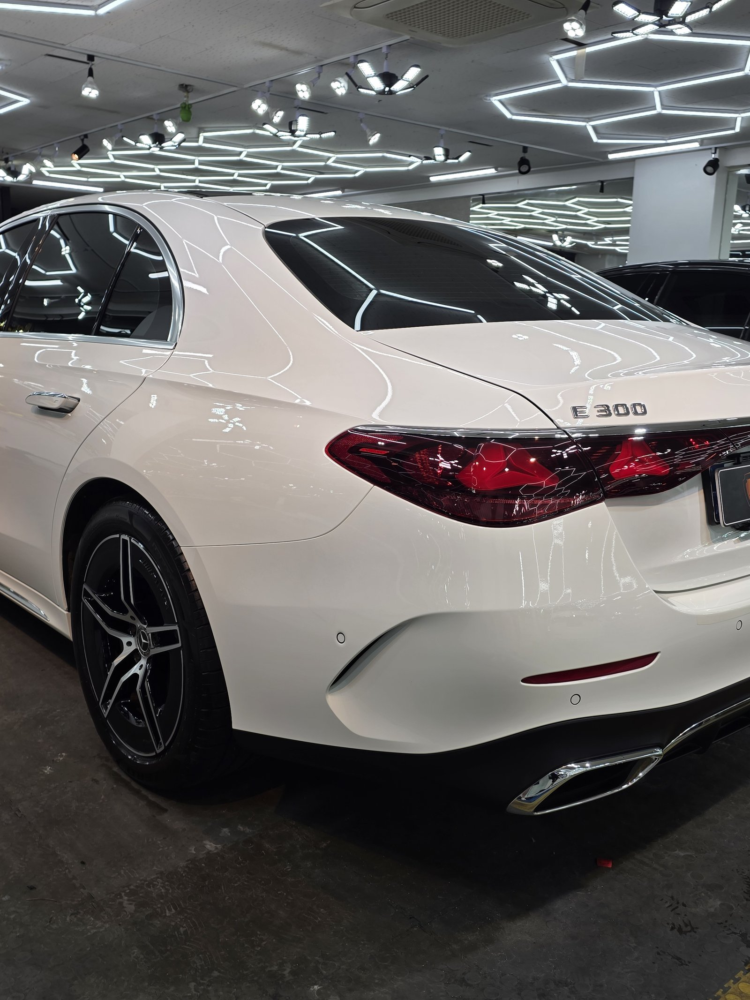
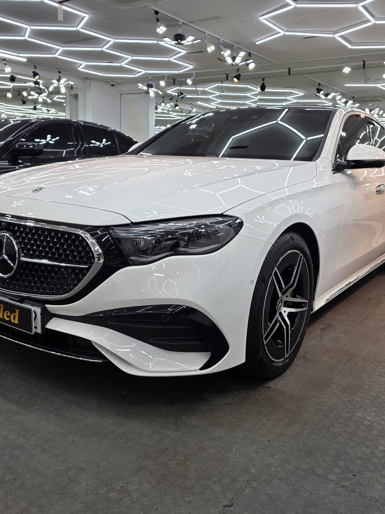

벤츠 E300 백색입니다.
이 차는 부산 광택으로 잔기스와 스월을 걷어낸 뒤, G-PRO+G-TOP 듀얼코팅까지 진행했습니다.

입고 당시 보닛 위로 헥사 조명이 떨어지는 걸 보면, 육각형 라인이 매끈하게 이어지지 않고 군데군데 각이 틀어져 있었습니다. 반사가 갈라지는 자리마다 잔기스와 스월이 쌓여 있었다는 뜻입니다.
흰색이라고 잔기스가 안 보이는 게 아닙니다
검정보다 흰색은 잔기스가 눈에 덜 띄는 편입니다. 그렇다고 흠집이 없는 건 아닙니다. 빛 각도가 맞는 순간 똑같이 드러나고, 방치하면 도장면 전체의 광택도가 흐려집니다.
이 차도 겉보기엔 깨끗했지만, 가까이서 손끝으로 짚어보니 단차가 거의 느껴지지 않을 만큼 얕은 선 스크래치가 리어펜더 쪽에 남아 있었습니다.

기술자의 팁
흰색은 조명 아래서 반사되는 헥사 라인이 뒤틀리는 정도로 잔기스 깊이를 가늠할 수 있습니다. 라인이 매끈하게 이어지면 표면이 고르다는 뜻이고, 각이 지거나 끊기면 그 자리에 흠집이 쌓여 있다는 뜻입니다.
부산 광택으로 잔기스부터 걷어냅니다
좋은 코팅도 잔기스가 남은 면 위에 올리면 흠집을 그대로 가둔 채 굳어버립니다. 그래서 순서가 중요합니다. 광택으로 표면을 먼저 정리하고, 그 위에 코팅을 올리는 순서입니다.
디테일링 세차로 표면 오염을 걷어내고, 철분 제거제로 박힌 쇳가루를 녹여냅니다. 몰딩과 고무 부위는 마스킹으로 보호하고, 탈지까지 끝내야 비로소 광택을 올릴 면이 됩니다. 그다음 흠집 깊이에 맞춰 컴파운드와 패드 조합을 바꿔가며 표면을 정교하게 깎아냅니다.

같은 자리, 광택 후에는 선명하던 스크래치 선이 거의 눈에 띄지 않을 만큼 정리됐습니다
광택 위에 G-PRO + G-TOP, 듀얼코팅
잔기스를 걷어낸 면 위에는 G-PRO와 G-TOP 두 겹을 순서대로 올렸습니다.
흰색은 검정처럼 발색 깊이를 따질 색이 아닙니다. 대신 스크래치 내성과 세차 후 관리 편의가 더 중요합니다. 그래서 저희 제품 중 경도가 가장 높은 G-PRO로 단단한 바탕을 먼저 잡고, 그 위에 발수·방오성이 가장 강한 G-TOP을 올렸습니다. 세차 후 물방울이 잘 맺혀 흘러내리고, 먼지·오염도 덜 달라붙게 마감한 조합입니다.

모든 시공 차량에 시공증명서와 전용 관리제 마스터샤이니를 함께 드립니다
마감 후
매장 헥사 조명이 보닛부터 루프, 펜더까지 왜곡 없이 한 줄 한 줄 또렷하게 떨어집니다.
잔기스로 끊겨 보이던 반사가 이제는 매끈한 육각 라인 그대로 이어집니다. 흰색 특유의 깨끗한 톤 위에, 듀얼코팅 특유의 맑은 광이 한 겹 더 올라간 상태입니다.





광택·코팅 후, 이렇게 관리하세요
광택도 코팅도 시공으로 끝이 아닙니다. 관리로 수명이 갈립니다.
완전 경화 전(약 하루)에는 비·눈·세차를 피해 주십시오. 브러시가 도는 자동세차(기계세차)는 잔기스를 다시 만드는 주된 원인이니 피하시는 게 좋습니다. 손세차 위주로 관리하시고, 3주에 한 번 전용 관리제 마스터샤이니를 뿌려주시면 광택면과 코팅력이 오래 유지됩니다.
자주 묻는 질문
Q. 광택과 유리막코팅은 어떻게 다른가요?
A. 광택은 이미 생긴 잔기스와 스월을 표면을 미세하게 깎아 정리하는 공정입니다. 유리막코팅은 그렇게 정리된 면 위에 보호막을 올리는 공정입니다. 이 차는 광택으로 먼저 잔기스를 걷어낸 뒤, 그 위에 듀얼코팅을 올렸습니다.
Q. 흰색 차는 잔기스가 잘 안 보이는데도 광택이 필요한가요?
A. 필요합니다. 흰색은 검정보다 잔기스가 덜 도드라져 보일 뿐, 남아 있는 흠집의 양은 다르지 않습니다. 조명이나 햇빛 각도에 따라 갑자기 선명하게 드러나기도 하고, 방치할수록 도장면 전체 광택도가 흐려집니다.
Q. 이 차는 왜 듀얼코팅(G-PRO+G-TOP)을 선택했나요?
A. 흰색은 발색 깊이보다 스크래치 내성과 관리 편의가 중요합니다. 경도가 가장 높은 G-PRO로 단단한 바탕을 잡고, 발수·방오성이 가장 강한 G-TOP을 올려 세차 후 오염이 덜 남게 마감했습니다.
Q. 코팅 후 세차는 언제부터 하나요?
A. 완전 경화 전(약 하루)에는 비·눈·세차를 피하시는 게 좋습니다. 이후에도 브러시가 도는 자동세차는 잔기스를 다시 만드는 원인이라 손세차 위주로 관리하시길 권합니다.
Q. 쉴드광택 위치와 예약은 어떻게 하나요?
A. 부산 남구 유엔로220 1F 쉴드광택입니다. 예약·상담은 010-3384-1850, 대표 최한중이 직접 상담하고 책임 시공합니다.
흰색이라도 잔기스는 똑같이 쌓입니다. 광택으로 표면을 먼저 정리한 뒤 코팅을 올려야 결과가 다릅니다.
부산 광택 전문, 제품을 직접 만드는 사람이 직접 시공합니다.
부산에서 광택·유리막코팅을 고민 중이시면 편하게 연락 주십시오.
어떤 차를 타냐보다 어떻게 타냐가 중요합니다~!
시공 중에는 전화를 받지 못할 때가 많습니다.
카카오톡으로 차종과 원하시는 시공을 남겨주시면 확인 후 답변드립니다.
쉴드광택 · 부산 남구 유엔로220 1F · 대표 최한중